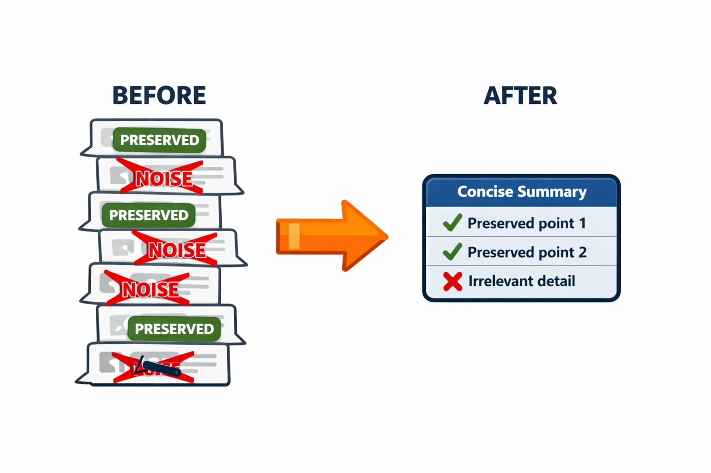
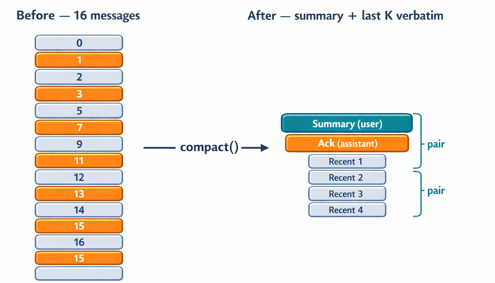

Sliding window and selective preservation are both subsetting strategies: they keep some messages from the array unchanged and drop the rest. Lecture 7.2 ended on their shared ceiling — even with perfect classification (no false positives, no false negatives), a long-running conversation eventually fills the window with messages that were all, at some point, worth keeping. Worse, importance is not static: a decision that mattered fifty messages ago may be irrelevant now. Subsetting has no answer for this.
The pivot is to stop asking "is this message worth keeping?" and start asking "can I summarize what this conversation has been about so far?" That is compaction — synthesis rather than selection. And the tool for synthesis is the one already at the center of the system: the LLM itself. Much of context management, and later memory management, follows this circular pattern — we solve the problems of working with LLMs by calling an LLM.

Compaction asks the model not to answer a question within the conversation but to condense the conversation itself — to read the whole history and produce a single high-signal summary of what matters for the conversation's future. That summary then becomes a synthetic message that stands in for the messages it replaced.
It is expensive in two senses. In dollars, it is an extra API call — though usually no more costly than the next message would have been, since it sends the conversation in and gets a response out. In time, it is a reasoning task that adds latency. Because of that cost, compaction should fire only when necessary.
The trigger is a percentage of the model's context window, measured with the same token-usage tracking from Lecture 6.4 — read response.usage.input_tokens and compare against a threshold. Sonnet's window is roughly 200K tokens (frontier models now reach a million); the common trigger range is 70–85% of the window. The detector is essentially one if:
def should_compact(input_tokens, model_limit, threshold=0.8):
return input_tokens >= model_limit * threshold
The natural question is why not wait longer — why compact at 80% rather than 100%? Three reasons:
This connects to a real debate about whether ever-larger context windows are the right direction. Providers expand windows partly for user experience — a novice user who doesn't know quality degrades simply prefers never having to compact or start over — and, more cynically, for economics: providers bill per token, so a window five times larger lets a conversation run five times longer before the user must compact or open a new session. Neither reason is aligned with the quality of your agent. Keeping the working context well under the limit is what produces good results.
One structural rule joins threshold detection: never compact mid-tool-call. If the previous response had stop_reason == "tool_use", the next message must be the matching tool_result. The hook checks for this and defers compaction until the tool exchange closes — the same pair-integrity concern from 7.1.
The compaction function is short. The compaction prompt is where nearly all the engineering effort goes. A weak prompt ("summarize this conversation") yields a chatty narrative with the wrong details. A strong prompt yields a structured artifact the agent can read on the next turn and continue from as if the prior conversation were still present. The prompt has three parts: what to preserve, what to discard, and how to format the result.
What to preserve — each item maps to a failure mode it prevents:
What to discard — this is what actually makes the context shrink:
Without an explicit discard list, the model produces a verbose summary that defeats the purpose.
Format specification — telling the model exactly what shape to emit makes the output consistent and parseable. Notice, too, that the prompt tells the model what kind of agent this is ("an AI coding assistant") and that the summary will replace most of the conversation — both let the model make better judgment calls. The prompt from compaction.py:
Summarize the conversation between a user and an AI coding assistant ...
This summary will REPLACE most of the conversation ...
PRESERVE (include in summary):
- Decisions made and actions taken ...
- Current state of the task ...
- Key facts about the project ...
- Unresolved issues or follow-up items ...
- User preferences and constraints ...
DISCARD (omit from summary):
- Raw file contents — note which files, not their bytes
- Full command outputs — note the result, not the bytes
- Chain-of-thought reasoning — keep conclusions, drop reasoning
- Intermediate tool calls — note the outcome, not the sequence
- Redundant or superseded information ...
FORMAT: Plain text. Use the four sections below verbatim.
## Conversation Summary
Task: <one-line description of the original goal>
Key Findings: <bullets>
Actions Taken: <bullets>
Current State: <done | in-progress with what remains>
Compaction shares the same hook point as truncation — between inner-loop iterations, before the next API call. The dispatcher checks compaction first because it is the more aggressive, information-preserving move; truncation is the cheaper fallback:
inner loop:
[HOOK]
if mid-tool-call: skip
elif should_compact(...): compact
elif should_truncate(...): truncate
response = client.messages.create(...)
Replacing the entire conversation with a summary is dangerous — summaries lose detail, and the most recent messages are usually the active state of the task. The hybrid pattern keeps the last K messages verbatim and summarizes only the older portion. This is, in effect, compaction layered on top of sliding window: the same safe-split logic from 7.1 finds where to divide the conversation, but where sliding window discards the older slice, compaction summarizes it.

The split point is moved forward to a safe boundary so the older slice never ends in an orphaned tool_use:
def compact_messages(messages, keep_last_k=6):
if len(messages) <= keep_last_k:
return list(messages), None, None
split = safe_split_index(messages, len(messages) - keep_last_k)
older, recent = messages[:split], messages[split:]
if not older:
return list(messages), None, None
response = client.messages.create(
model=SUMMARIZER_MODEL, max_tokens=1024,
messages=[{"role": "user",
"content": COMPACTION_PROMPT + render_for_summary(older)}],
)
summary = response.content[0].text
rebuilt = [
{"role": "user", "content": f"[Prior conversation summary]\n{summary}"},
{"role": "assistant", "content": "Understood. I have the prior context ..."},
] + recent
return ensure_alternating_roles(rebuilt), summary, response.usage
The summary becomes a synthetic user message at the front, followed by a synthetic assistant acknowledgment (so roles alternate), then the recent messages verbatim. The whole thing passes through ensure_alternating_roles — the same helper from 7.1 — to repair the join. Pair integrity still applies to the recent block: never split a tool_use from its tool_result.
The model doing the work and the model doing the summary need not be the same. The agent loop might run on Opus or Sonnet; the compaction call can run on Haiku. Summarization and classification are exactly the class of task where Haiku is nearly as strong as the larger models — they do not demand deep reasoning — and Haiku is both cheaper (roughly 4× lower cost) and faster. The speed matters more than it first appears: cheaper, faster compaction means you can afford to compact more often, which keeps the working context smaller, which keeps quality higher. The savings compound — one Haiku call buys smaller (Sonnet-priced) inputs on every subsequent turn.
There is an elegant property in placing the summary at the front of the conversation. After the first compaction, the context is a small summary plus a few recent messages. As work continues, new messages accumulate, so by the next compaction the conversation is heavily weighted toward new content with the prior summary at the front. The model then re-summarizes "summary + new messages," naturally producing a fresh summary biased toward the newer material while folding in the still-relevant takeaways from the old one. Compaction after compaction, the summary keeps rewriting itself to favor what's current — which is exactly what a long-running agent wants.
Running compaction.py on a 20-message debugging session (a login 500-error investigation with many tool calls), keeping the last four messages verbatim, Haiku produces:
## Conversation Summary
Task: Fix 500 error on login page
Key Findings:
- Root cause: column name mismatch — code references `password_hash`
but the database schema uses `password`
- Three references found: routes/auth.py (1), models/user.py (2)
Actions Taken:
- Changed `password_hash` to `password` in routes/auth.py and models/user.py
- Ran auth test suite: all 5 tests passed
Current State: Done — login functionality restored and verified by tests
On this small sample the conversation shrinks by about a third; in real sessions the reduction is far larger, because most of a real conversation is tool output and file contents — exactly what the discard list removes. The proof that the pattern works is the follow-up turn: asked "what was the original error and how many places did we fix?" from the compacted context, the agent answers correctly — the 500 error, the password_hash/password mismatch, and the three fixed locations — demonstrating that the hybrid result preserved enough state to continue.
The summary is too long. Occasionally the model returns a summary that doesn't shrink the context enough — a chatty model, or an unusually dense conversation. The fix is iterative compression: if the result still exceeds the threshold, compact again. One pass is almost always enough; a second is rare and cheap.
Critical detail is lost. A summary may drop something the agent needs, most often a constraint stated late that the model treated as "context" rather than "decision." Two mitigations: the hybrid pattern already preserves recent constraints verbatim, and the important: True tags from selective preservation can bypass compaction entirely — flagged messages are appended verbatim alongside the summary regardless of age.
Compaction loops. If each compaction leaves enough context to re-trip the threshold quickly, the agent compacts every few turns, producing summaries of summaries. The naive guard is a minimum interval (don't compact until M new messages have arrived), but this is usually a symptom of a weak prompt. The better fix is to give the model a concrete reduction target — "aim to reduce by at least 40%," "the summary should be ~10% of the conversation." Summarizing 10,000 tokens into 9,000 is useless; it just buys a few messages before the next compaction.
Cost. Compaction costs a small fixed amount (one Haiku call), and every subsequent turn then carries fewer tokens, so it costs less. On a long session the savings reach 10–50× the cost of compaction. This is the rare engineering case where one move wins on all three axes at once — money, speed, and quality — because keeping the context well under the limit improves the model's output. That is why compaction is the dominant production pattern.
All three strategies wire into the agent at the same hook point and differ only in cost and what they lose:
| Strategy | Cost | Information loss |
|---|---|---|
| Sliding window | Free | Drops everything old |
| Selective preservation | Free | Drops untagged old messages |
| Compaction | One Haiku call | Lossy, but preserves meaning |
Real agents are not built from one of these — they blend all three. Agent design is an art: a production system might run selective preservation continuously, fall back to a sliding window for cheap trims, and reach for compaction when the context is deep and dense. Lab 5 is where these come together: detect the threshold, decide which strategy to apply, run it, and continue — and the decision logic is part of what you design.
Trigger compaction at 70–85% of the model window — never wait for 100%, because you need headroom for the compaction call and the next turn, and because quality degrades before the limit. The compaction prompt is the engineering artifact: a preserve list, a discard list, and a strict format, each rule tied to a failure mode. Use the hybrid pattern — summary plus the last K verbatim — because pure replacement loses too much. Run the summary on a cheap, fast model (Haiku) so you can afford to compact often. Know the edge-case fixes: iterative compression, important-tag bypass, and reduction targets to avoid loops. And remember why compaction dominates production agents: a small fixed cost buys lower token bills, faster turns, and better output all at once.